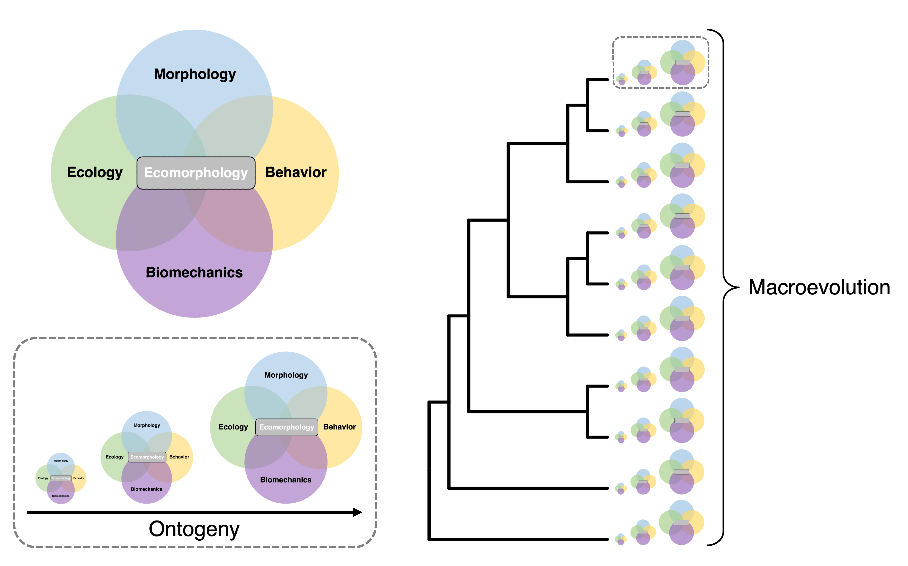

Broadly, my research investigates the processes and mechanisms that generate phenotypic variation and biodiversity. I integrate bio-imaging techniques, functional morphology, biomechanical modelling, and laboratory experiments to quantify relationships between morphology, behavior, and performance in ecological contexts. I analyze these data with phylogenetic comparative methods to explore how such relationships evolve and diversify. My research centers around three overarching questions: 1) How do phenotypes evolve to meet ecological demands? 2) How do interactions among systems and traits promote diversification? 3) How do ecological, morphological, and functional novelties alter the tempo and mode of evolution?
I am an integrative organismal biologists whose interests span topics and clades. Below are some current areas of research. Click the photos to read more.

Current Research